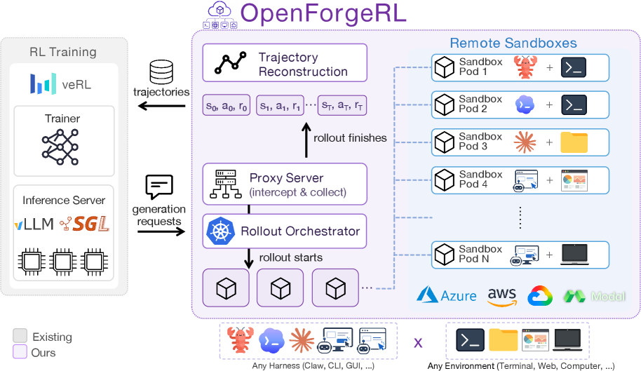
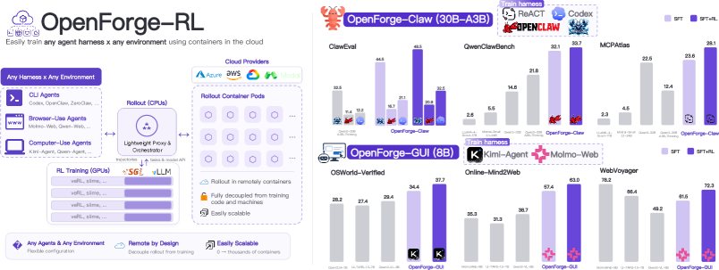

Training Agents Inside Their Harnesses (Microsoft)
TL;DR
- OpenForgeRL (Yu, Peng, Xu, Zou, Wu, Cheng, Yao, Singh, Yu, Gao — Microsoft and collaborators, arXiv 2607.21557) is an open-source framework for training agents end-to-end inside the real inference harnesses they deploy with (Claude Code/Codex/OpenClaw-class scaffolds), which open SFT/RL stacks otherwise cannot express because harness inference is stateful and multi-process.
- The trick is decoupling: a lightweight proxy serves the harness's model calls while recording them as training data for a standard RL codebase (e.g., veRL), and a Kubernetes orchestrator runs each rollout in its own remote container — any harness, any environment, at scale.
- With only hundreds to a few thousand tasks, OpenForgeGUI reaches 72.3 on WebVoyager, 63.0 on Online-Mind2Web, 37.7 on OSWorld-Verified; OpenForgeClaw reaches 31.7 and 55.9 pass@3 on ClawEval and 33.7 on QwenClawBench — beating similar-size open baselines nearly everywhere and matching much larger models in the GUI setting. Bonus finding: harness choice is a training variable — some harnesses are substantially harder to learn than others.
Why this matters
There is a widening train/deploy mismatch in agentic RL. Deployed agents live inside elaborate harnesses — multi-turn loops, tool routers, sub-agent spawning, context compaction, retry logic — but almost all open RL training happens in stripped-down single-process environments that look nothing like deployment, because open RL stacks assume the trainer owns the rollout loop: one policy, one context, tokens in and out. A real harness inverts that: it is an external, stateful, multi-process program that calls the model many times per task, from different components, with its own bookkeeping in between. veRL-style trainers have no native way to express this, so people either train harness-free and hope behavior transfers into the scaffold, or reimplement a toy harness inside the trainer and train for the wrong distribution.
OpenForgeRL closes that gap with infrastructure rather than algorithms. That makes it the training-side half of the model–harness co-evolution loop this reading list tracks: Recursive Harness Self-Improvement optimizes the harness around a fixed model and explicitly frames harness traces as future training data; OpenForgeRL is the machinery that actually trains a model on execution inside a real harness.
The core idea
The insight is an inversion of control: don't put the harness inside the trainer — put a recorder between the harness and the model. The harness runs unmodified, exactly as deployed, in its own container against a real environment. Every model call it makes goes through a lightweight proxy that (a) serves the call from the current policy and (b) records the request/response as training data in the format a standard RL codebase expects. The harness doesn't know it's being trained; the trainer doesn't need to understand harness internals. All the statefulness and multi-process complexity that broke existing stacks becomes invisible to the trainer, because the proxy flattens harness execution into a stream of logged model interactions.

Figure from the paper: overview of OpenForgeRL — an orchestrator spawns remote sandboxes in which an LLM/VLM interacts with its environment through a harness; a proxy intercepts the harness's LLM calls, routes them to the RL framework's inference engines, and records the exchanged io-pairs as training trajectories.
Because training and inference are decoupled at the API boundary — the same boundary every harness already speaks — the approach is harness-agnostic and environment-agnostic by construction: anything that calls an OpenAI-compatible endpoint can be trained this way (the API-shape detail is inferred from the proxy design — verify in the paper).
How it works
The pipeline, per the abstract and thread:
- Rollout isolation. A Kubernetes orchestrator launches each rollout in its own remote container: harness + environment (terminal, browser, full OS) packaged together. This gives clean state per trajectory and horizontal scale.
- Proxy-mediated inference. Inside the rollout, the harness's model calls route through the lightweight proxy, which serves them from the current policy weights and logs every call — prompts, completions, and enough structure to reconstruct the trajectory — as RL training data.
- Standard RL training. The recorded data feeds a standard RL codebase (veRL is named as the example) — so the algorithmic stack (policy-gradient methods, batching, etc.) is off-the-shelf; OpenForgeRL's contribution is making real-harness rollouts expressible to it. Task outcomes provide the reward signal (reward/credit-assignment specifics across a harness's many model calls are not detailed in the abstract — verify in the paper).
- Iterate at scale. Updated weights serve subsequent rollouts; the orchestrator keeps many containers rolling in parallel.
The formalism (from the paper's full text). The agent–environment interaction is a POMDP \(\langle\mathcal{S},\mathcal{A},\mathcal{T},\mathcal{R},\gamma\rangle\), but under a real harness \(\mathcal{H}\) the policy never sees raw history — the harness transforms it into the model-visible context, so the logged trajectory is
where \(s_t\) is the raw observation, \(a_t \sim \pi(\cdot \mid \mathcal{H}(s_t))\) the model's response, and \(\mathcal{H}(s_t)\) the harness-constructed prompt (compaction, tool schemas, sub-agent context). This also answers the credit-assignment question the abstract leaves open: the proxy collects the terminal reward \(r_T\) (task success) plus all recorded prompt–response pairs and reconstructs per-step training samples by broadcasting the terminal reward backwards,
with \(\gamma=1.0\) typically — i.e., every model call in a successful rollout gets the full terminal reward (Equation 1 in the paper). Training uses GRPO, with advantages computed by comparing average rewards across trajectories in the same group.
OpenForgeRL training loop (condensed from the paper):
for each RL iteration:
orchestrator spawns K remote sandboxes (harness + environment per container)
for each sandbox, asynchronously:
harness runs unmodified on a task x
every LLM call the harness makes -> proxy:
serve completion from current policy pi_theta
(via the RL framework's inference engines)
log the io-pair (H(s_t), a_t)
episode ends -> terminal reward r_T (task success / failure)
proxy reconstructs trajectories: (s^H_t, a_t, r_t) with r_t = gamma^(T-t) * r_T
trainer (veRL + GRPO, group-relative advantages) updates pi_theta
updated weights serve subsequent rollouts
Validated instantiations span tool/claw-based agents (terminal-style coding/tool harnesses — the paper analyzes ZeroClaw, OpenClaw, and Codex harnesses) and multimodal GUI agents (browser use and computer use), yielding two trained model families: OpenForgeClaw and OpenForgeGUI.
Results

Figure from the paper: OpenForgeRL builds on Orchard Env and connects any harness × any environment to standard RL codebases such as veRL, with no train–deploy mismatch; OpenForge-trained models are evaluated with six harnesses across six Claw and GUI environments.
Numbers present in the abstract/thread:
- Data efficiency: only hundreds to a few thousand tasks per setting.
- OpenForgeClaw: 31.7 pass@3 and 55.9 pass@3 on ClawEval (two ClawEval numbers are quoted in the abstract — likely different splits or settings; check the paper for which is which), and 33.7 on QwenClawBench.
- OpenForgeGUI: 37.7 on OSWorld-Verified, 63.0 on Online-Mind2Web, 72.3 on WebVoyager.
- Relative standing: both outperform open baselines of similar size on nearly all benchmarks; in the GUI setting they match or surpass models several times larger.
- Qualitative findings: (1) harness choice shapes learning — some harnesses (across ZeroClaw / OpenClaw / Codex) are substantially harder to learn than others; (2) RL improves agentic reliability: self-verification, tool coverage, and completion of multi-step plans; (3) error recovery remains weak even after RL.
How it connects
- Recursive Harness Self-Improvement (this list): the complementary half of model–harness co-evolution. RHI optimizes the harness and argues its traces should feed future training; OpenForgeRL is the system that consumes real-harness traces for training today. An obvious composition: run RHI-optimized harnesses inside OpenForgeRL rollouts.
- No Universally Best Harness (this list): independently converges on "harness is a first-class variable." That paper shows it at inference time for discovery; OpenForgeRL shows it at training time — harness difficulty differences mean the scaffold you train in partly determines the policy you get.
- Harness Handbook (this list): if harnesses are training variables, iterating on harness design becomes part of the training loop, and the Handbook's behavior-localization tooling is what makes rapid harness iteration safe.
- Long-Horizon Agents survey (this list): OpenForgeRL sits squarely in the survey's "internalized model optimization" pillar (agentic RL), and its findings (self-verification improves, error recovery doesn't) map onto the survey's harness-component decomposition — verification is learnable, recovery may still need harness support.
- Also in this list: AgentGym-RL, OSGym (parallel OS sandboxes at $0.23/day — the environment-side scaling complement), Molt (NVIDIA's PyTorch-native agentic RL), prime-RL (async RL), and TRACE (turn-level rewards — a candidate answer to the credit-assignment question OpenForgeRL's abstract leaves open).
- Well-known prior work: veRL as the underlying RL stack; the SWE-agent line established that the agent–computer interface changes agent capability, which this paper upgrades from an inference-time observation to a training-time one; benchmark lineage — WebVoyager, Mind2Web/Online-Mind2Web, OSWorld — is the standard GUI-agent evaluation stack.
Critical take
- Credit assignment is under-specified in the sources. A harness may make dozens of heterogeneous model calls (planner, executor, summarizer) per task; how outcome reward is attributed across recorded calls — and whether all call types are trained or some masked — is the technical crux, and the abstract is silent on it. Read that section first.
- On-policyness of the proxy. If rollouts are long and containers many, recorded data can lag the current policy; how staleness/off-policy correction is handled matters for stability and isn't stated in these sources.
- Benchmark-adjacent training. "Hundreds to a few thousand tasks" in the same domains as the evals invites distribution-matching concerns; strong pass@3 numbers should be read alongside pass@1 and held-out-harness results in the paper.
- Error recovery stays weak. This is the most interesting negative result: RL sharpened execution (verification, tool coverage, plan completion) but not recovery from failure. Plausibly recovery is rare in successful rollouts, so outcome-reward RL barely reinforces it — an argument for either harness-level recovery scaffolding or targeted reward shaping (both open here).
- Unfamiliar eval names. ClawEval and QwenClawBench are 2026 benchmarks for claw-style tool harnesses (inferred from the thread and abstract context — verify in the paper); treat cross-paper comparisons on them cautiously until they stabilize.
- Infrastructure cost. One container per rollout with full harness + environment is heavy relative to text-only RL; the paper's scalability claims deserve scrutiny against OSGym-style cost-optimized alternatives.
If you remember three things
- OpenForgeRL trains agents in the harness they deploy with by inserting a serve-and-record proxy at the model-API boundary and isolating each rollout in its own container — harness complexity becomes invisible to a standard RL stack like veRL.
- With only hundreds-to-thousands of tasks it produces small models that beat same-size open baselines (72.3 WebVoyager, 63.0 Online-Mind2Web, 37.7 OSWorld-Verified for the GUI agent) and rival much larger ones.
- Harness choice is a training variable and error recovery is the stubborn residual: RL inside real harnesses improves self-verification and multi-step completion, but recovery from failure doesn't come along for free.